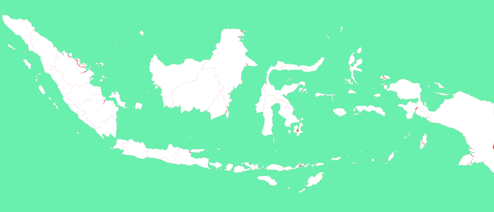

Regional

Wilayah 1
Surabaya, Sidoarjo, dan Gresik
Sampan, Bangkalan, Pamekasan, dan Sumenep
Lamongan, Bojonegoro, Tuban, dan Jombang
Malang, Pasuruan, Mojokerto, dan Batu
Banyuwangi, Jember, Bondowoso, Situbondo, Lumajang, dan Probolinggo
Wilayah 2
Madiun, Magetan, Ngawi, Ponorogo, dan Pacitan
Blitar, Kediri, Nganjuk, Tulungagung, dan Trenggalek
Semarang, Kudus, Pati, Pekalongan, dan Tegal
Yogyakarta, Solo, Sragen, dan Klaten
Bandung, Tasikmalaya, Garut, dan Cirebon
Wilayah 3
Jakarta, Bogor, Depok, Tangerang, Bekasi
Lampung, Palembang, Riau, dan sekitarnya
Samarinda, Banjarmasin, Balikpapan, dan sekitarnya
Denpasar, Matararam, Sumbawa, Bima
Makasar, Palu, dan sekitarnya